Chapter 7 Visualizar datos
7.1 TODO
- Some interesting simple ideas here http://pythonplot.com/
- TABLA RESUMEN CON IMAGENES DE GRAFICAS
WHY Data visualization matters: https://www.autodeskresearch.com/publications/samestats
Vamos a usar la siguiente base de datos.
R es un lenguaje especialmente potente para la visualización de datos. Librerias como ggplot2 permiten una cantidad abrumadora de opciones. Aqui presentamos ejemplos de algunas de las posibilidades de R.
7.2 Que gráfica puedo usar (WIP)
 * Image FROM Modern Dive
* Image FROM Modern Dive
| DV/IV | IV continua | IV vategórica | IV dicotómica |
|---|---|---|---|
| DV continua | SCATTER PIRATE CORREL | PIRATE CAJA | BEAN DENSITY PIRATE |
| DV categórica | … | PIRATE | … |
| DV dicotómica | … | … | … |
- Cargamos librerias y leemos datos
# Cargamos librerias
if (!require('pacman')) install.packages('pacman'); library('pacman')
p_load(tidyverse, yarrr)
# Leemos datos y echamos un vistazo
datos = read_csv("Data/06_Visualize_data/Visualize_data.csv"); datos ## # A tibble: 103 x 7
## ID Genero Edad Educacion FollowUP condition PPV_DECLARED
## <int> <int> <int> <int> <int> <chr> <int>
## 1 1 1 47 8 80 PPV_Cond1 99
## 2 2 2 21 6 90 PPV_Cond1 99
## 3 3 2 29 6 10 PPV_Cond1 99
## 4 4 2 27 7 75 PPV_Cond1 1
## 5 5 1 29 5 35 PPV_Cond1 24
## 6 6 2 28 6 14 PPV_Cond1 99
## 7 7 2 27 4 2 PPV_Cond1 99
## 8 8 2 55 6 89 PPV_Cond1 99
## 9 9 2 28 6 6 PPV_Cond1 99
## 10 10 1 46 5 0 PPV_Cond1 1
## # ... with 93 more rows# A algunas de las funciones no les gustan las tibbles!
datos2 = read.csv("Data/06_Visualize_data/Visualize_data.csv") - Nota sobre sintaxis
En muchos de los gráficos, análisis estadísticos, etc, usaremos la sintaxis: Var_Dep ~ Var_Indep_1 + Var_Indep_2
7.3 Tipos de gráficas
7.3.1 Histogramas
La función hist() nos permite crear de manera muy sencilla histogramas para ver
# Histograma sencillo
hist(datos$Edad)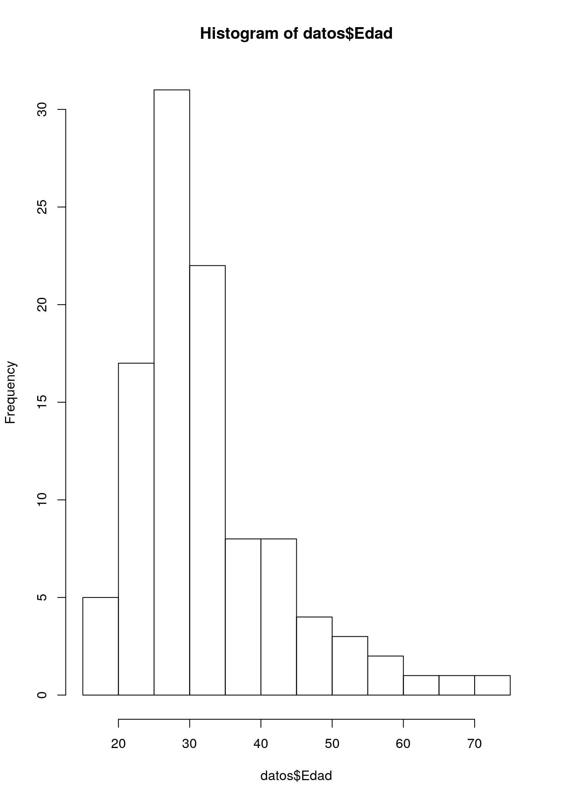
# Dotplot histogram
qplot(datos$Edad,
geom="dotplot",
fill = I("forestgreen"),
xlab = "Age",
main = "Age dotplot histogram")## `stat_bindot()` using `bins = 30`. Pick better value with `binwidth`.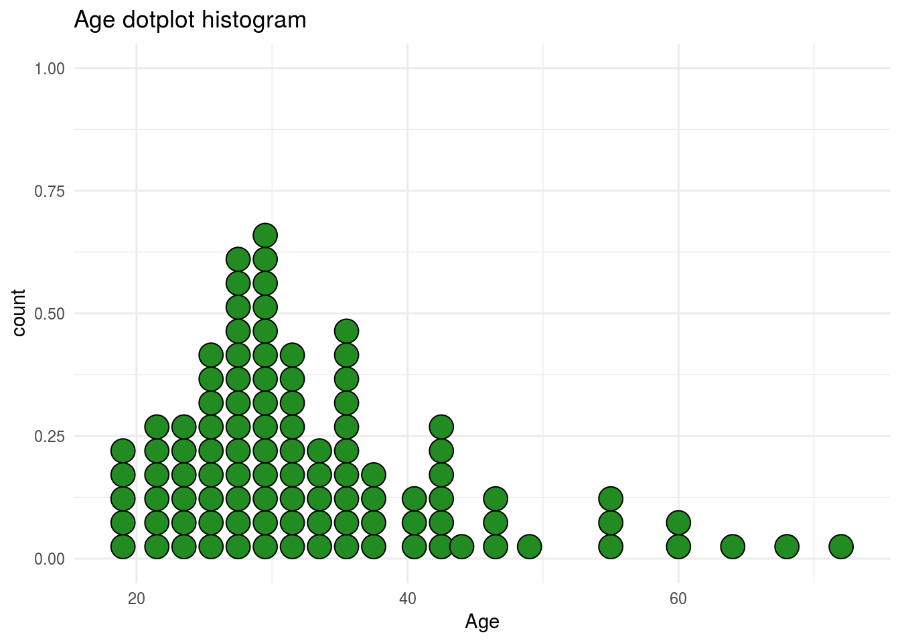
Si queremos ver los histogramas de todas las variables numéricas de nuestro dataset:
# Metodo 1
if (!require('pacman')) install.packages('pacman'); library('pacman')
p_load(psych) #plyr
# multi.hist(datos) #error, not numeric
multi.hist(datos[,sapply(datos, is.numeric)])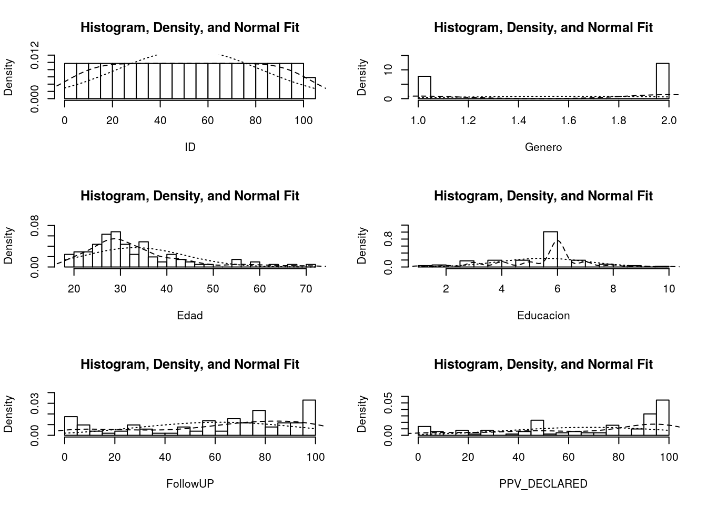
# Metodo 2
p_load(reshape2, ggplot2)
d <- melt(datos)## Using condition as id variablesggplot(d,aes(x = value)) +
facet_wrap(~variable,scales = "free_x") +
geom_histogram(bins = 15) #+ coord_cartesian(ylim = c(0, 100))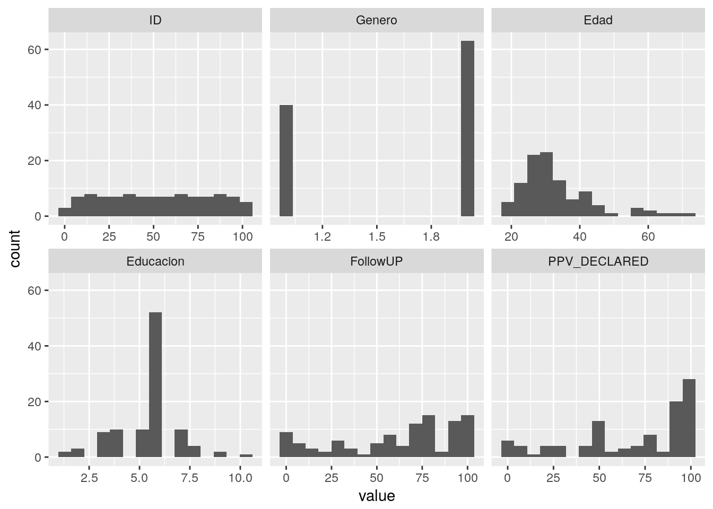
7.3.2 Pirate plot
Ver la web del creador: Pirate plot y su página de Github
# Cargamos librerias
if (!require('pacman')) install.packages('pacman'); library('pacman')
p_load(yarrr)
# Mostramos gráfico con opciones por defecto
pirateplot(formula = PPV_DECLARED ~ condition, datos)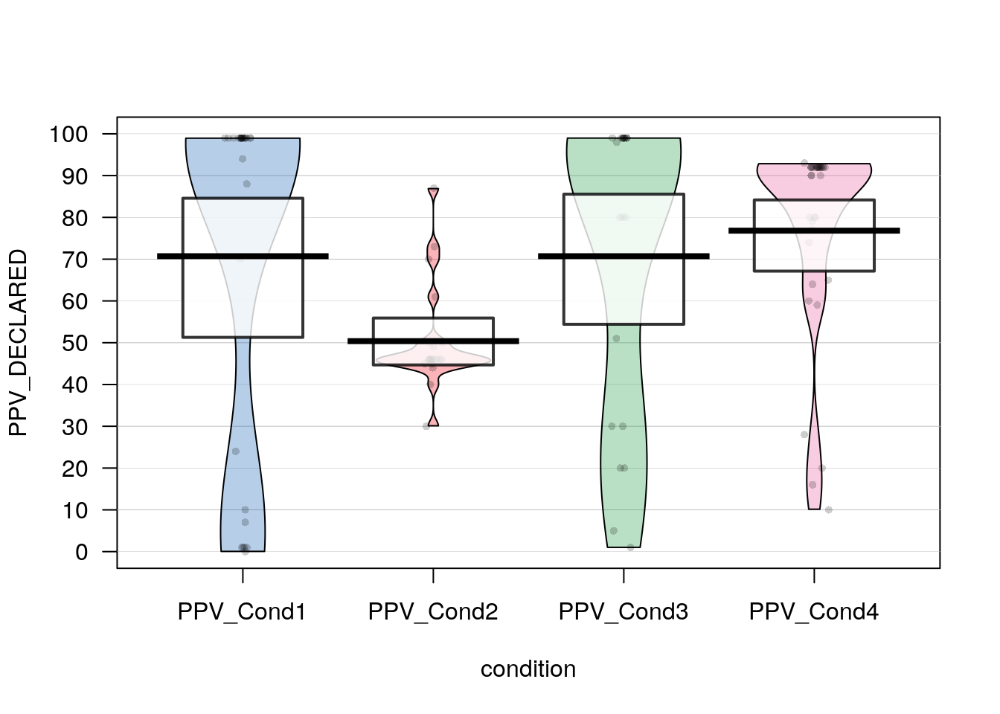
# Personalizamos el gráfico
pirateplot(formula = PPV_DECLARED ~ condition,
data = datos,
main = "PPV by condition",
avg.line.fun = median,
#theme.o = 2,
jitter.val = .2,
inf.method = "ci", #Show confidence interval (95%)
inf.f.o = 0.2, #Opacity of ci
pal = "appletv")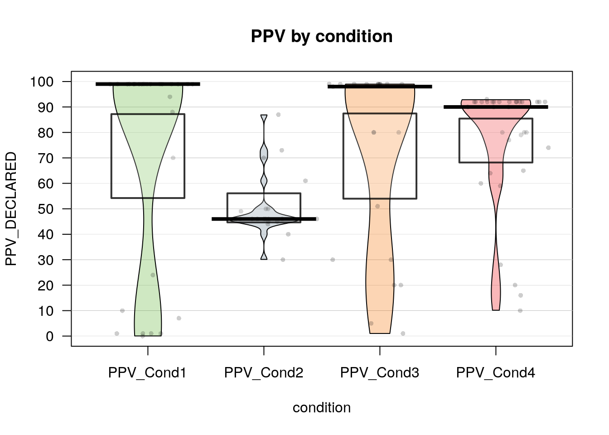
7.3.3 Barplots with individual responses
# https://mvuorre.github.io/post/2017/within-subject-scatter/
barplot <- ggplot(datos, aes(x = condition, y = PPV_DECLARED, color = condition)) +
stat_summary(
geom = "bar",
fun.y = "mean",
# col = "black",
fill = "gray70",
alpha = .6
) +
geom_point(position = position_jitter(h = 0, w = 0.2)) +
scale_y_continuous(limits = c(0, 100),
expand = c(0, 0))
barplot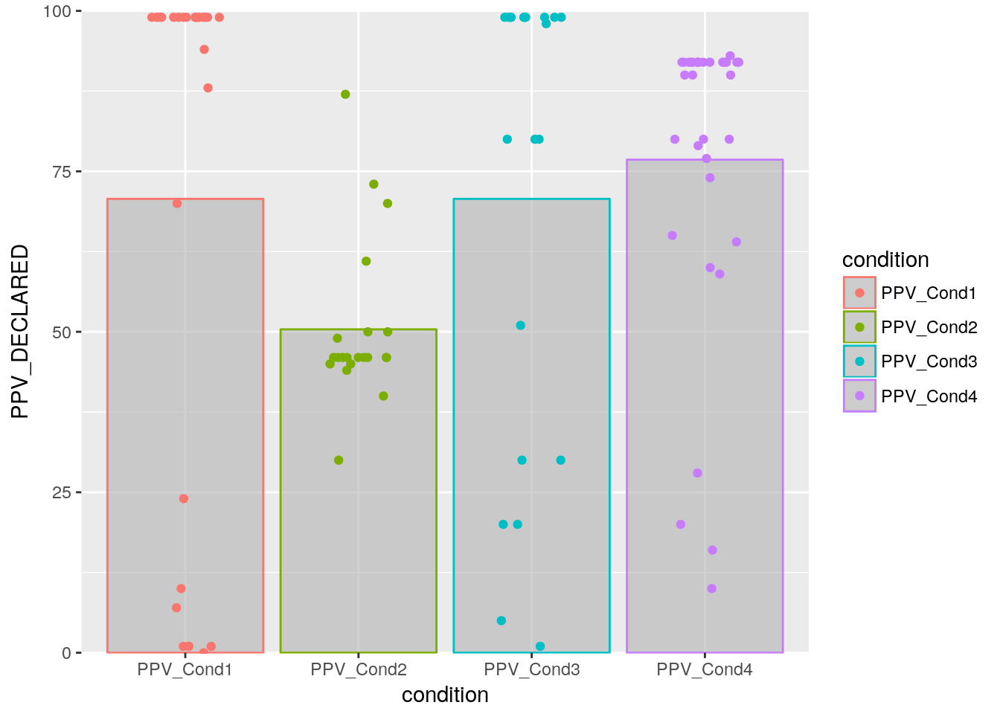
7.3.4 Diagrama de caja y bigotes
boxplot(PPV_DECLARED ~ condition, datos)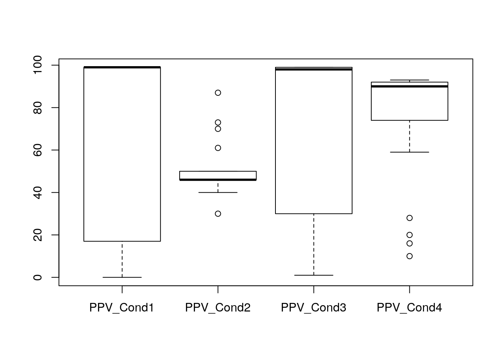
7.3.5 Correlation plot
Ver la web del paquete: Correlation plot y su página de Github
# Cargamos libreria
if (!require('pacman')) install.packages('pacman'); library('pacman')
p_load(corrplot)
corrplot(cor(datos[,c(2:5,7)]), mar = c(1,0, 0, 0),tl.cex = 0.9,
method = "square", type = "lower", tl.col = "black", diag = T)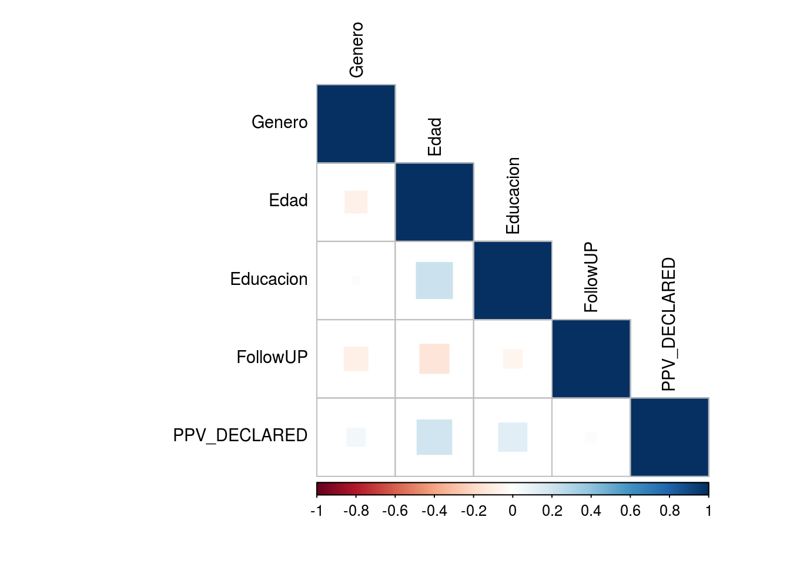
7.3.6 Beanplot
Ver la web del paquete Beanplot
# Cargamos libreria
if (!require('pacman')) install.packages('pacman'); library('pacman')
p_load(beanplot)
beanplot(FollowUP ~ Genero, data = datos, side = "both", log = "", names = c("Hombre","Mujer"),
what = c(1,1,1,0), border = NA, col = list("black", c("grey", "white")))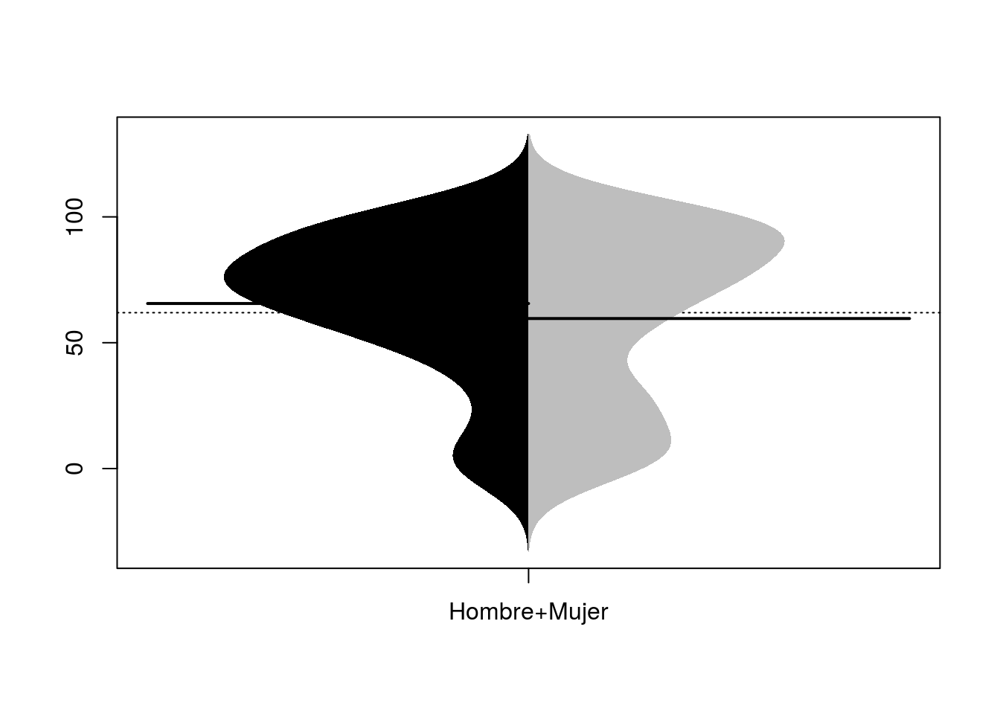
# legend("bottomleft", fill = c("black", "grey"), legend = c("H", "M"), title = "Genero")7.3.7 Scatterplot
Ver la web del creador: ggpubr y su página de Github
# Cargamos libreria
if (!require('pacman')) install.packages('pacman'); library('pacman')
p_load(ggpubr)
ggscatter(datos2, x = "Educacion", y = "Edad",
color = "black", shape = 21, size = 4, # Points color, shape and size
add = "reg.line", # Add regressin line
add.params = list(color = "blue", fill = "lightgray"), # Customize reg. line
conf.int = TRUE, # Add confidence interval
cor.coef = TRUE # Add correlation coefficient
)
7.3.8 Scatterplot con 3 variables
Ver la web de documentación de ggplot2 y su página de Github
# Cargamos libreria
if (!require('pacman')) install.packages('pacman'); library('pacman')
p_load(tidyverse)
ggplot(datos, aes(PPV_DECLARED, FollowUP, color=factor(Genero))) +
geom_point(shape=1, size = 2) +
scale_colour_hue(l=50) + # Palette hue
geom_smooth(method=lm, # Linear regression lines
se=T, # Confidence interval
fullrange=F) # Extend regression lines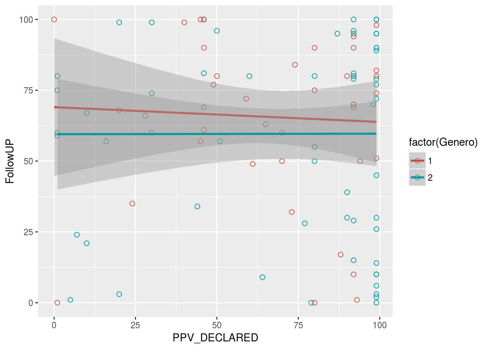
7.3.9 Density plots
Ver la web del creador: ggpubr y su página de Github
- The variable we use to create two different sub-plots has to be a factor!
if (!require('pacman')) install.packages('pacman'); library('pacman')
p_load(tidyverse, ggpubr)
datos = read_csv("Data/06_Visualize_data/Visualize_data.csv")## Parsed with column specification:
## cols(
## ID = col_integer(),
## Genero = col_integer(),
## Edad = col_integer(),
## Educacion = col_integer(),
## FollowUP = col_integer(),
## condition = col_character(),
## PPV_DECLARED = col_integer()
## )datos = datos %>%
mutate(Genero = as.factor(unlist(Genero))) %>% #Make Genero a factor
mutate(PPV_DECLARED = as.numeric(unlist(PPV_DECLARED)))
ggdensity(datos, x = "PPV_DECLARED",
add = "mean", rug = TRUE,
color = "Genero", palette = c("#00AFBB", "#E7B800"), fill = "Genero")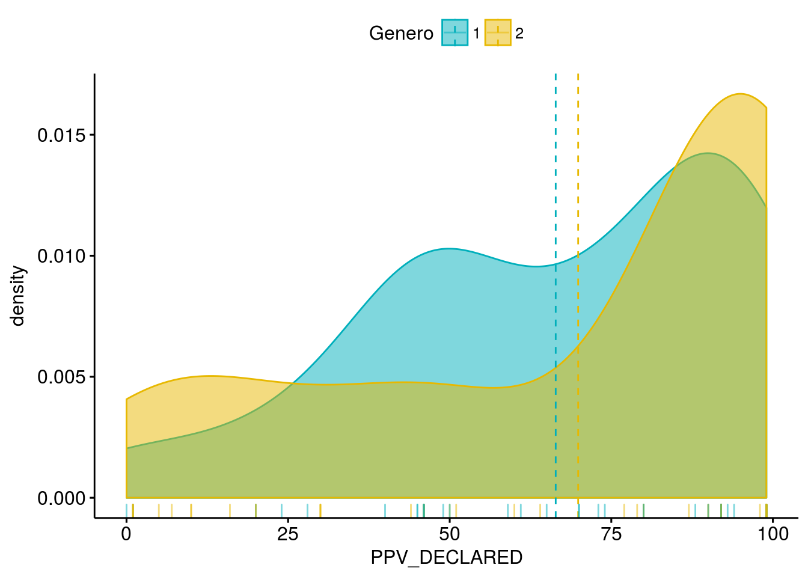
7.3.10 Density Ridges Plots (ggjoy)
if (!require('pacman')) install.packages('pacman'); library('pacman')
p_load(tidyverse, ggridges)
datos2 = datos %>% drop_na() %>%
filter(Educacion < 8) %>%
mutate(Educacion = as.factor(Educacion)) %>%
mutate(PPV_DECLARED = as.double(PPV_DECLARED))
# datos2 %>% group_by(Genero) %>% dplyr::summarise(N = n())
# Simple version
ggplot(datos2, aes(x = FollowUP, y = Genero)) +
geom_density_ridges(scale = 2)## Picking joint bandwidth of 12.4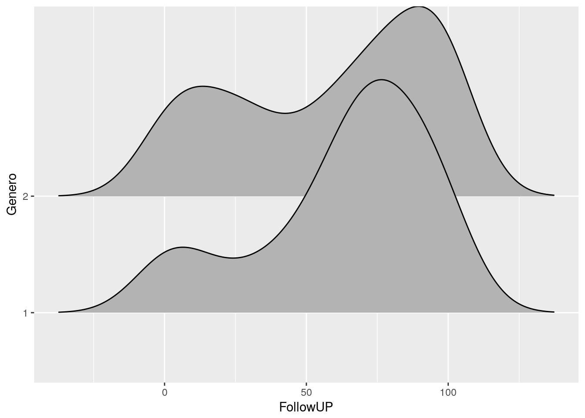
# Tweak some aesthetics
ggplot(datos2, aes(x = FollowUP, y = Genero, fill = Genero)) +
geom_density_ridges(scale = 2, alpha = .7, color = "white") +
scale_fill_hue(l=30)## Picking joint bandwidth of 12.4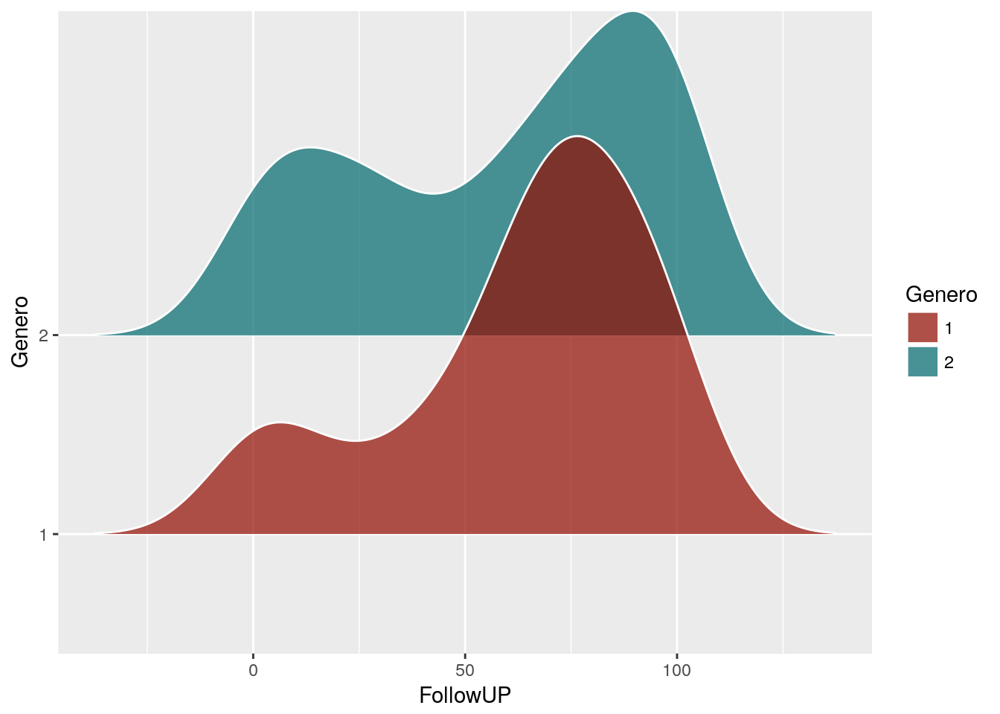
# Histogram stat
ggplot(datos2, aes(x = FollowUP, y = Genero, fill = Genero)) +
geom_density_ridges(scale = 2, alpha = .7, color = "white", stat = "binline", bins = 20) +
scale_fill_hue(l=30)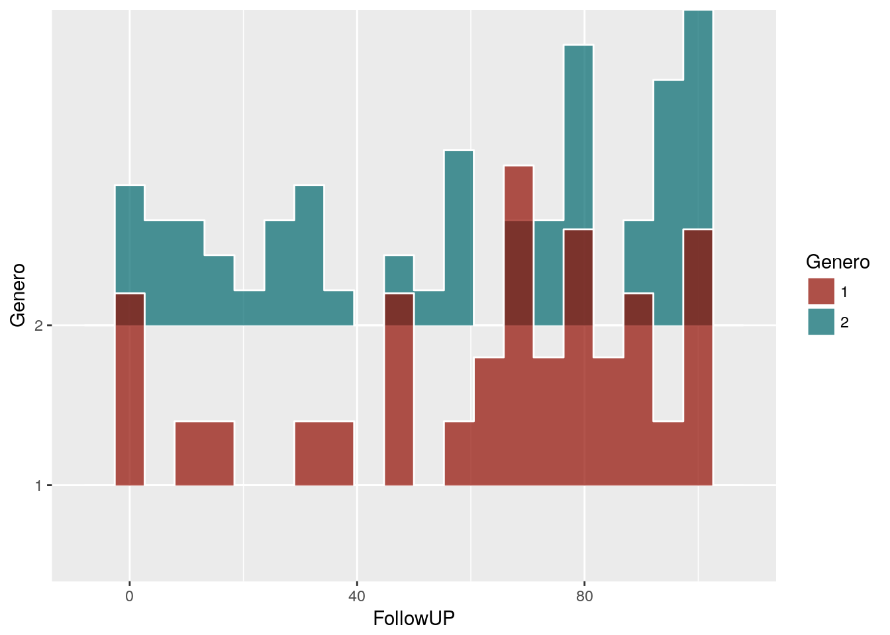
# Combined
ggplot(datos2, aes(x = FollowUP, y = Genero, fill = Genero)) +
geom_density_ridges(scale = 2, alpha = .7, color = "white", stat = "binline", bins = 20) +
geom_density_ridges(scale = 2, alpha = .4, color = "white") +
scale_fill_hue(l=30)## Picking joint bandwidth of 12.4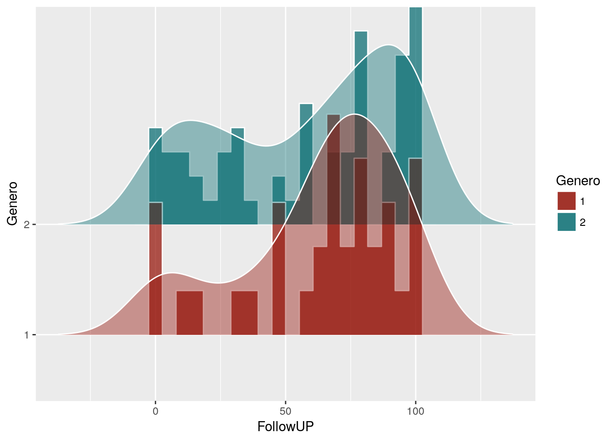
7.3.11 PP plots
Plots of distributional differences… See http://www.dandersondata.com/post/esvis-part-1/
devtools::install_github("DJAnderson07/esvis")
library(esvis)
pp_plot(reading ~ frl, benchmarks)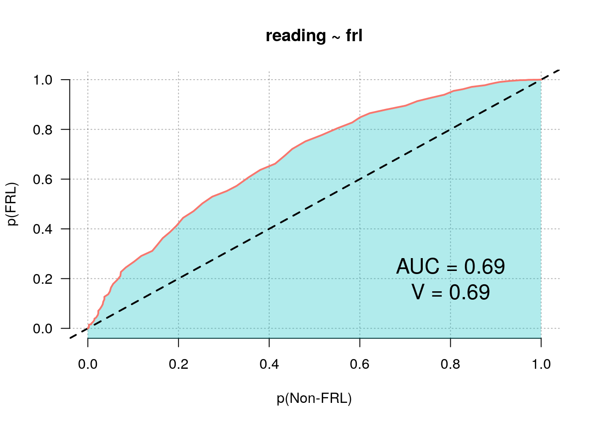
pp_plot(reading ~ ell, benchmarks, ref_group = "Non-ELL")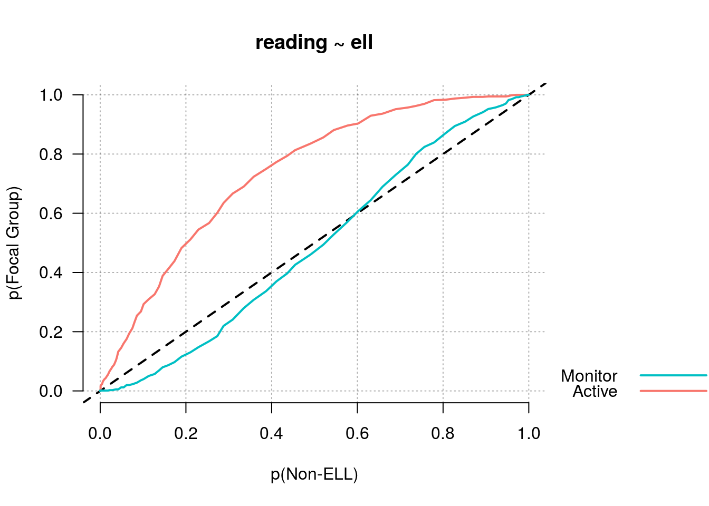
“Notice in this plot there is actually a reversal of the effect for monitor students. On the lower end of the scale, Monitor students are actually out-performing non-ELL students, but this effect reverses at the top of the scale. A summary measure would not provide this type of information, but it may be incredibly valuable for theory development. For example, for this finding we may theorize that students with very low achievement receive a benefit from essentially any additional attention, even if that attention is not directly related to academics.”(http://www.dandersondata.com/post/esvis-part-1/)
For the sake of comparison, here are the distributions plotted with geom_density_ridges:
ggplot(benchmarks, aes(x = reading, y = ell, fill = ell)) +
geom_density_ridges(scale = 2, alpha = .7, color = "white", stat = "binline", bins = 20) +
geom_density_ridges(scale = 2, alpha = .4, color = "white") +
scale_fill_hue(l=30)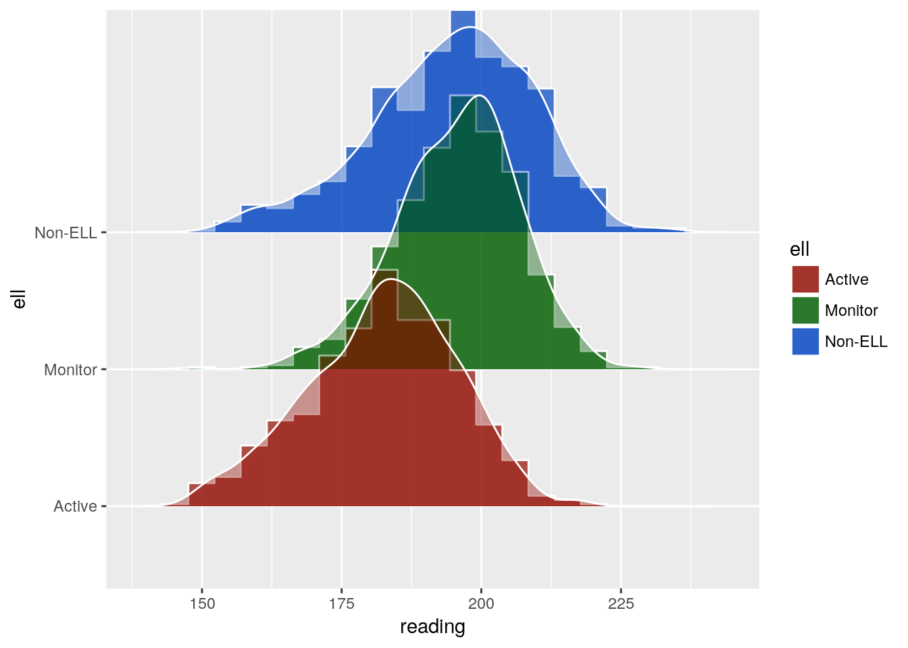
7.3.12 Shaded geom area
FROM @kara_woo: https://gist.github.com/karawoo/14f4f46da900b09997d26171d092fb92
library(tidyverse, ggplot2)
data_for_plot = read_csv("Data/06_Visualize_data/data_shaded_geom_area.csv")
# Deaths by cause
p_area <- ggplot(data_for_plot, aes(x=year, y=count, group=cat, order=cat)) +
geom_area(aes(fill=cat), position='stack')
p_area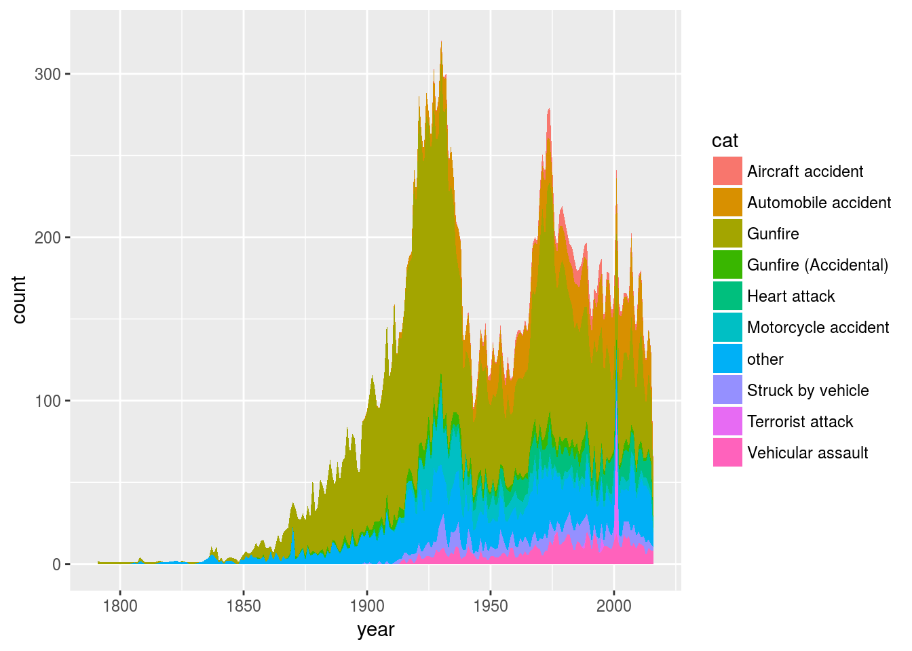
## Calculate total deaths by year
dat <- data_for_plot %>%
group_by(year) %>%
mutate(total = sum(count))
## Colors I chose
mycolors <- c("#00bf7b", "#59004d", "#ffcb89", "#a76e61", "#ac270d", "#7890ff",
"#6ca013", "#c2e05e", "#00300d", "#ff7b90")
## Plot as small multiples
#** BUG: If we run the code for this plot in bookdown after loading packages plyr, Rmisc, the y axis gets mangled.**
p_small_mult <- ggplot(dat, aes(x = year)) +
## Gray background showing total
geom_area(aes(y = total), fill = "grey80", alpha = 0.7) +
## Individual areas for each category
geom_area(aes(y = count, fill = cat)) +
facet_wrap(~ cat, nrow = 2) +
## Further customization
scale_fill_manual(values = mycolors) +
scale_y_continuous(limits = c(0, max(dat$total) + 5), expand = c(0, 0)) +
theme_minimal() +
theme(
legend.position = "none",
axis.text = element_text(size = 7)
) +
labs(
y = "Total deaths",
x = "Year",
title = "On-duty police officer deaths",
subtitle = "Data: https://github.com/fivethirtyeight/data/police-deaths"
)
p_small_mult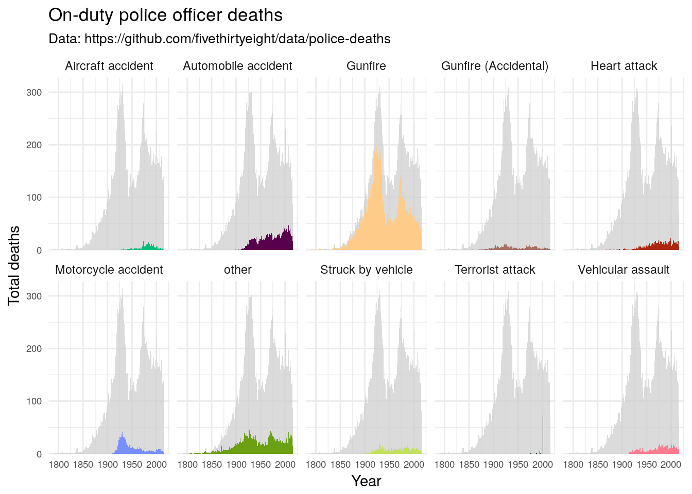
7.3.13 Multiple Scatterplots
if (!require('pacman')) install.packages('pacman'); library('pacman')
p_load(tidyverse, ggthemes, Rmisc)
a = read_csv("Data/06_Visualize_data/data_multiple_scatterplot.csv")## Parsed with column specification:
## cols(
## ID = col_integer(),
## `Executive functions` = col_double(),
## `Emotional recognition` = col_integer(),
## ToM = col_integer(),
## `Inhibitory verbal control` = col_integer(),
## `Cryst.Intellig.1 (vocab.)` = col_integer(),
## `Cryst. Intellig.2 (years of studies)` = col_integer(),
## `Fluid intelligence` = col_integer(),
## `Social adaptation` = col_integer(),
## Age = col_integer()
## )# Si se cambia alguno de estos nombres, cambiar tb abajo (o mejor, find and replace all!)
colnames(a) = c("a", "Executive functions", "Emotional recognition", "ToM", "Inhibitory verbal control", "Cryst. Intellig. (vocab)", "Cryst. Intellig. (years of education)", "Fluid intelligence", "w", "gg")
p1 = ggplot(a, aes(x = `Cryst. Intellig. (vocab)`, y = `Executive functions`)) + geom_point(shape=16, fill="darkgrey", color="black", size=2) +
geom_smooth(method=lm, fill="grey", color="black", se = F, size = .5) + theme_tufte() + theme(axis.title.x=element_blank())
p2 = ggplot(a, aes(x = `Cryst. Intellig. (vocab)`, y = `Emotional recognition`)) + geom_point(shape=16, fill="darkgrey", color="black", size=2) +
geom_smooth(method=lm, fill="grey", color="black", se = F, size = .5) + theme_tufte() + theme(axis.title.x=element_blank())
p3 = ggplot(a, aes(x = `Cryst. Intellig. (vocab)`, y = ToM)) + geom_point(shape=16, fill="darkgrey", color="black", size=2) +
geom_smooth(method=lm, fill="grey", color="black", se = F, size = .5) + theme_tufte() + theme(axis.title.x=element_blank())
p4 = ggplot(a, aes(x = `Cryst. Intellig. (vocab)`, y = `Inhibitory verbal control`)) + geom_point(shape=16, fill="darkgrey", color="black", size=2) +
geom_smooth(method=lm, fill="grey", color="black", se = F, size = .5) + theme_tufte()
p5 = ggplot(a, aes(x = `Cryst. Intellig. (years of education)`, y = `Executive functions`)) + geom_point(shape=16, fill="darkgrey", color="black", size=2) +
geom_smooth(method=lm, fill="grey", color="black", se = F, size = .5) + theme_tufte() + theme(axis.title.x=element_blank(), axis.title.y=element_blank())
p6 = ggplot(a, aes(x = `Cryst. Intellig. (years of education)`, y = `Emotional recognition`)) + geom_point(shape=16, fill="darkgrey", color="black", size=2) +
geom_smooth(method=lm, fill="grey", color="black", se = F, size = .5) + theme_tufte() + theme(axis.title.x=element_blank(), axis.title.y=element_blank())
p7 = ggplot(a, aes(x = `Cryst. Intellig. (years of education)`, y = ToM)) + geom_point(shape=16, fill="darkgrey", color="black", size=2) +
geom_smooth(method=lm, fill="grey", color="black", se = F, size = .5) + theme_tufte() + theme(axis.title.x=element_blank(), axis.title.y=element_blank())
p8 = ggplot(a, aes(x = `Cryst. Intellig. (years of education)`, y = `Inhibitory verbal control`)) + geom_point(shape=16, fill="darkgrey", color="black", size=2) +
geom_smooth(method=lm, fill="grey", color="black", se = F, size = .5) + theme_tufte() + theme(axis.title.y=element_blank())
p9 = ggplot(a, aes(x = `Fluid intelligence`, y = `Executive functions`)) + geom_point(shape=16, fill="darkgrey", color="black", size=2) +
geom_smooth(method=lm, fill="grey", color="black", se = F, size = .5) + theme_tufte() + theme(axis.title.x=element_blank(), axis.title.y=element_blank())
p10 = ggplot(a, aes(x = `Fluid intelligence`, y = `Emotional recognition`)) + geom_point(shape=16, fill="darkgrey", color="black", size=2) +
geom_smooth(method=lm, fill="grey", color="black", se = F, size = .5) + theme_tufte() + theme(axis.title.x=element_blank(), axis.title.y=element_blank())
p11 = ggplot(a, aes(x = `Fluid intelligence`, y = ToM)) + geom_point(shape=16, fill="darkgrey", color="black", size=2) +
geom_smooth(method=lm, fill="grey", color="black", se = F, size = .5) + theme_tufte() + theme(axis.title.x=element_blank(), axis.title.y=element_blank())
p12 = ggplot(a, aes(x = `Fluid intelligence`, y = `Inhibitory verbal control`)) + geom_point(shape=16, fill="darkgrey", color="black", size=2) +
geom_smooth(method=lm, fill="grey", color="black", se = F, size = .5) + theme_tufte() + theme(axis.title.y=element_blank())
multiplot(p1, p2, p3, p4, p5, p6, p7, p8, p9, p10, p11, p12, cols=3)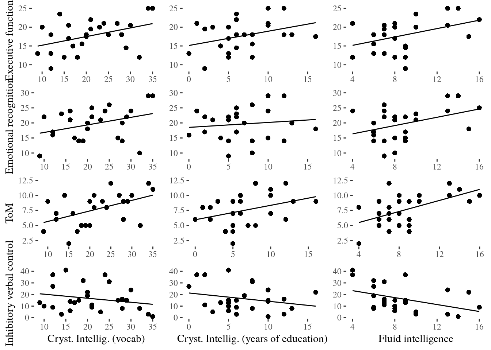